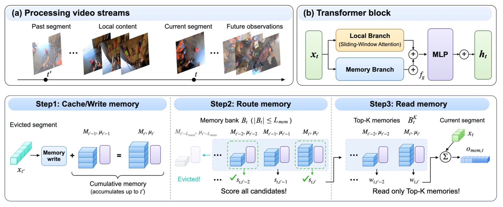
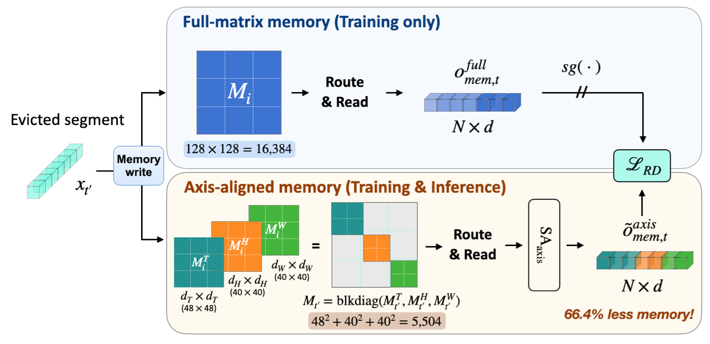
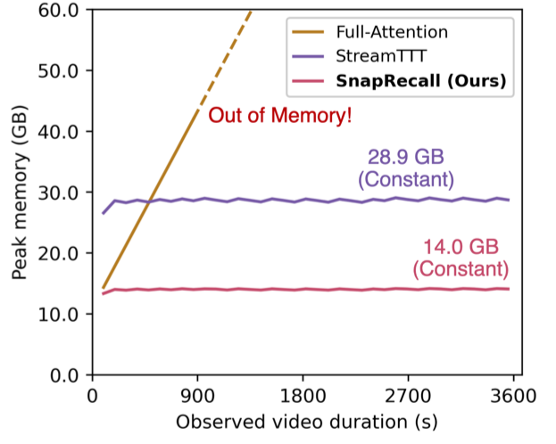
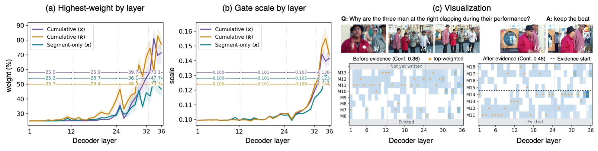

SnapRecall: Real-Time Video Understanding with Cumulative Memory Routing

Abstract
Real-time video assistants must understand ongoing events while recalling distant history under a fixed memory budget. Existing approaches retain or prune historical tokens, or compress them into a single evolving state, limiting either storage efficiency or selective access to past states. We present SnapRecall, a streaming VLM that preserves recent visual details through local attention and accumulates evicted tokens into a bounded bank of compact memory snapshots, each summarizing the stream up to its corresponding time. Each incoming token selectively reads these snapshots, and a learned gate fuses the resulting historical context with local attention. We further introduce a compact axis-aligned variant to reduce memory storage. SnapRecall matches or exceeds leading streaming VLMs in real-time perception and historical recall in OVO-Bench, using a smaller token budget, fewer training instructions, and substantially lower peak memory that remains constant over long streams. It also achieves strong results on StreamingBench, ProactiveVideoQA, and SPOT-Bench with promising proactive capabilities. All resources will be released.
How SnapRecall works
Preserve recent details
Causal sliding-window attention gives each incoming segment access to the recent visual tokens in the local window.
Accumulate history
When a segment leaves the window, its key–value associations are added to the preceding snapshot. The bank evicts its oldest snapshot when full, and newer snapshots retain its accumulated contributions.
Retrieve and fuse
Each token ranks snapshots using descriptors of their newest segments, then combines the selected readouts. A learned gate controls how much historical context is added to local attention.


Axis-aligned memory
The Axis variant replaces each full memory matrix with temporal, height, and width blocks. This cuts entries per head from 16,384 to 5,504, a 66.4% reduction. During training, the full-matrix readout supervises a lightweight attention module that refines the axis-aligned readout.


Benchmark results
On OVO-Bench, SnapRecall (Full) scores 79.5% for real-time perception and 60.4% for backward tracing. It uses a 3K-token inference budget and requires no test-time gradient updates.

Input lists the frame count or frame rate and, where available, the token budget. A dash indicates an unreported or inapplicable value. Wide tables can be scrolled horizontally.
OVO-Bench
Accuracy (%) across real-time perception, backward tracing, and forward active responding.
| Method | Input | Size | Real-Time Visual Perception | Backward Tracing | Forward Active Responding | ||||||||||||
|---|---|---|---|---|---|---|---|---|---|---|---|---|---|---|---|---|---|
| OCR | ACR | ATR | STU | FPD | OJR | Avg. | EPM | ASI | HLD | Avg. | REC | SSR | CRR | Avg. | |||
| Human | – | – | 94.0 | 92.6 | 94.8 | 92.7 | 91.1 | 94.0 | 93.2 | 92.6 | 93.0 | 91.4 | 92.3 | 95.5 | 89.7 | 93.6 | 92.9 |
| Offline VLMs | |||||||||||||||||
| Qwen2-VL | 1 fps | 7B | 69.1 | 53.2 | 63.8 | 50.6 | 66.3 | 60.9 | 60.7 | 44.4 | 66.9 | 34.4 | 48.6 | 30.1 | 65.7 | 50.8 | 48.9 |
| LLaVA-OneVision | 32 | 7B | 67.1 | 58.7 | 69.8 | 49.4 | 71.3 | 60.3 | 62.8 | 52.5 | 58.8 | 23.7 | 45.0 | 24.8 | 66.9 | 60.8 | 50.9 |
| LLaVA-NeXT-Video | 64 | 7B | 69.8 | 59.6 | 66.4 | 50.6 | 72.3 | 61.4 | 63.3 | 51.2 | 64.2 | 9.7 | 41.7 | 34.1 | 67.6 | 60.8 | 54.2 |
| Streaming VLMs | |||||||||||||||||
| VideoLLM-online | 2 fps | 8B | 8.1 | 23.9 | 12.1 | 14.0 | 45.5 | 21.2 | 20.8 | 22.2 | 18.8 | 12.2 | 17.7 | – | – | – | – |
| Flash-VStream | 1 fps | 7B | 25.5 | 32.1 | 29.3 | 33.7 | 29.7 | 28.8 | 29.9 | 36.4 | 33.8 | 5.9 | 25.4 | 5.4 | 67.3 | 60.0 | 44.2 |
| Dispider | 1 fps | 7B | 57.7 | 49.5 | 62.1 | 44.9 | 61.4 | 51.6 | 54.5 | 48.5 | 55.4 | 4.3 | 36.1 | 18.0 | 37.4 | 48.8 | 34.7 |
| TimeChat-Online | 1 fps | 7B | 69.8 | 48.6 | 64.7 | 44.9 | 68.3 | 55.4 | 58.6 | 53.9 | 62.8 | 9.1 | 42.0 | 32.5 | 36.5 | 40.0 | 36.4 |
| StreamAgent | 1 fps | 7B | 71.2 | 53.2 | 63.6 | 53.9 | 67.3 | 58.7 | 61.3 | 54.8 | 58.1 | 25.8 | 41.7 | 35.9 | 48.4 | 52.0 | 45.4 |
| Streamo | 2 fps | 7B | 77.2 | 66.1 | 76.7 | 45.5 | 66.3 | 72.8 | 67.4 | 55.6 | 58.1 | 33.9 | 49.2 | 30.8 | 57.6 | 82.5 | 57.0 |
| SimpleStream | 4 | 8B | 94.0 | 85.3 | 82.8 | 65.7 | 77.2 | 83.2 | 81.4 | 51.9 | 58.1 | 52.1 | 54.0 | – | – | – | – |
| Streaming VLMs with Qwen3-VL-4B | |||||||||||||||||
| SimpleStream | 16 | 4B | – | – | – | – | – | – | 77.5 | – | – | – | 54.6 | – | – | – | – |
| HERMES | 2 fps / 4K | 4B | 81.8 | 72.4 | 78.4 | 59.5 | 75.2 | 66.3 | 72.3 | 55.8 | 63.5 | 45.7 | 55.0 | – | – | – | – |
| StreamTTT | 2 fps / 4K | 4B | 91.3 | 80.7 | 80.2 | 56.2 | 82.2 | 77.7 | 78.1 | 60.9 | 58.1 | 60.8 | 59.9 | – | – | – | – |
| SnapRecall (Axis) | 2 fps / 2.4K | 4B | 91.3 | 81.7 | 76.7 | 59.0 | 82.2 | 77.2 | 78.0 | 58.6 | 59.5 | 58.6 | 58.9 | 25.2 | 73.0 | 47.1 | 48.4 |
| SnapRecall (Full) | 2 fps / 3K | 4B | 94.0 | 82.6 | 78.4 | 58.4 | 86.1 | 77.7 | 79.5 | 60.5 | 60.1 | 60.8 | 60.4 | 24.6 | 71.7 | 50.8 | 49.1 |
StreamingBench
Real-Time Video Understanding accuracy (%) across all ten subtasks.
| Method | Input | Size | OP | CR | CS | ATP | EU | TR | PR | SU | ACP | CT | Avg. |
|---|---|---|---|---|---|---|---|---|---|---|---|---|---|
| Human | – | – | 89.5 | 92.0 | 93.6 | 91.5 | 95.7 | 92.5 | 88.0 | 88.8 | 89.7 | 91.3 | 91.5 |
| Proprietary VLMs | |||||||||||||
| Gemini 1.5 Pro | 1 fps | – | 79.0 | 80.5 | 83.5 | 79.7 | 80.0 | 84.7 | 77.8 | 64.2 | 72.0 | 48.7 | 75.7 |
| GPT-4o | 64 | – | 77.1 | 80.5 | 83.9 | 76.5 | 70.2 | 83.8 | 66.7 | 62.2 | 69.1 | 49.2 | 73.3 |
| Offline VLMs | |||||||||||||
| Video-LLaMA2 | 32 | 7B | 55.9 | 55.5 | 57.4 | 58.2 | 52.8 | 43.6 | 39.8 | 42.7 | 45.6 | 35.2 | 49.5 |
| LongVA | 128 | 7B | 70.0 | 63.3 | 61.2 | 70.9 | 62.7 | 59.5 | 61.1 | 53.7 | 54.7 | 34.7 | 60.0 |
| LLaVA-NeXT-Video | 64 | 32B | 78.2 | 70.3 | 73.8 | 76.8 | 63.4 | 69.8 | 57.4 | 56.1 | 64.3 | 38.9 | 67.0 |
| MiniCPM-V 2.6 | 32 | 8B | 71.9 | 71.1 | 77.9 | 75.8 | 64.6 | 65.7 | 70.4 | 56.1 | 62.3 | 53.4 | 67.4 |
| LLaVA-OneVision | 32 | 7B | 80.4 | 74.2 | 76.0 | 80.7 | 72.7 | 71.7 | 67.6 | 65.5 | 65.7 | 45.1 | 71.1 |
| Qwen2.5-VL | 1 fps | 7B | 78.3 | 80.5 | 78.9 | 80.5 | 76.7 | 78.5 | 79.6 | 63.4 | 66.2 | 53.2 | 73.7 |
| Qwen2-VL | 1 fps | 7B | – | – | – | – | – | – | – | – | – | – | 69.0 |
| Streaming VLMs | |||||||||||||
| Flash-VStream | – | 7B | 25.9 | 43.6 | 24.9 | 23.9 | 27.3 | 13.1 | 18.5 | 25.2 | 23.9 | 48.7 | 23.2 |
| VideoLLM-online | 2 fps | 8B | 39.1 | 40.1 | 34.5 | 31.1 | 46.0 | 32.4 | 31.5 | 34.2 | 42.5 | 27.9 | 36.0 |
| Dispider | 1 fps | 7B | 74.9 | 75.5 | 74.1 | 73.1 | 74.4 | 59.9 | 76.1 | 62.9 | 62.2 | 45.8 | 67.6 |
| StreamForest | 1 fps | 7B | 83.1 | 82.8 | 82.7 | 84.3 | 77.5 | 78.2 | 76.9 | 69.1 | 75.6 | 54.4 | 77.3 |
| TimeChat-Online | 1 fps | 7B | – | – | – | – | – | – | – | – | – | – | 75.2 |
| StreamAgent | 1 fps | 7B | – | – | – | – | – | – | – | – | – | – | 74.2 |
| SimpleStream | 4 | 8B | – | – | – | – | – | – | – | – | – | – | 80.5 |
| Streaming VLMs with Qwen3-VL-4B | |||||||||||||
| HERMES | 2 fps / 4K | 4B | 79.8 | 77.3 | 88.0 | 88.1 | 79.9 | 85.7 | 84.3 | 73.6 | 73.7 | 41.5 | 78.2 |
| StreamTTT | 2 fps / 4K | 4B | – | – | – | – | – | – | – | – | – | – | 81.3 |
| SnapRecall (Axis) | 2 fps / 2.4K | 4B | 84.3 | 68.8 | 89.3 | 87.5 | 75.5 | 84.4 | 80.6 | 71.5 | 83.8 | 37.2 | 79.0 |
| SnapRecall (Full) | 2 fps / 3K | 4B | 84.3 | 71.1 | 89.9 | 87.8 | 76.7 | 84.4 | 80.6 | 71.1 | 84.1 | 44.1 | 79.8 |
ProactiveVideoQA
PAUC at ω = 0.5 across the WEB, EGO, TV, and VAD domains.
| Method | Input | Size | WEB | EGO | TV | VAD |
|---|---|---|---|---|---|---|
| Offline VLMs | ||||||
| InternVL-2.5 | 2 fps | 8B | 48.2 | 57.8 | 41.5 | 21.5 |
| Qwen-2.5-VL | 2 fps | 7B | 52.7 | 46.5 | 36.5 | 29.3 |
| Streaming VLMs | ||||||
| VideoLLM-Online | 2 fps | 8B | 25.9 | 25.0 | 18.3 | 25.0 |
| MMDuet | 2 fps | 3B | 38.9 | 46.0 | 21.1 | 27.4 |
| MMDuet2 | 2 fps | 3B | 53.3 | 33.6 | 43.4 | 28.9 |
| VideoChat3 | 4 fps | 4B | 39.6 | 32.3 | 39.6 | 38.9 |
| SnapRecall (Axis) | 2 fps / 2.4K | 4B | 46.0 | 62.3 | 48.4 | 42.6 |
| SnapRecall (Full) | 2 fps / 3K | 4B | 49.9 | 61.8 | 49.3 | 40.3 |
SPOT-Bench
Each cell reports Timeliness-Score / Timeliness-F1@5 (%).
| Method | Input | Size | Detection | Interaction | Intervention | Overall | |||
|---|---|---|---|---|---|---|---|---|---|
| ABD | PNR | SQA | SPG | SI | UI | Avg. | |||
| MMDuet2 + KVflush | 1 fps | 3B | 6.2/7.5 | 3.5/4.8 | 37.8/5.3 | 2.6/3.0 | 0.0/0.0 | 0.0/0.0 | 8.4/3.4 |
| MMDuet2 + StreamingVLM | 1 fps | 3B | 1.0/1.7 | 4.9/6.6 | 31.0/4.0 | 1.0/2.2 | 0.0/0.0 | 0.0/0.0 | 6.3/2.4 |
| StreamingVLM | 2 fps | 7B | 8.2/4.8 | 5.5/2.1 | 31.6/0.9 | 1.2/0.3 | 3.2/0.7 | 2.4/0.5 | 8.7/1.6 |
| AsynKV | 1 fps | 7B | 40.2/22.6 | 36.8/19.5 | 30.8/18.0 | 1.2/1.0 | 0.0/0.0 | 0.0/0.0 | 18.2/10.2 |
| MiniCPM-o 4.5 | 2 fps | 8B | 11.5/15.4 | 12.1/14.3 | 7.8/7.2 | 3.1/5.2 | 0.0/0.0 | 19.4/6.7 | 9.0/8.1 |
| JoyAI-VL | 2 fps | 12B | 15.3/17.0 | 32.2/15.6 | 21.2/5.9 | 8.1/6.9 | 5.0/2.3 | 22.8/10.2 | 17.4/9.7 |
| SnapRecall (Axis) | 2 fps / 2.4K | 4B | 45.2/10.3 | 74.7/6.3 | 17.6/6.3 | 3.4/2.1 | 0.0/0.0 | 43.0/7.3 | 30.6/5.4 |
| SnapRecall (Full) | 2 fps / 3K | 4B | 44.7/10.3 | 69.9/6.3 | 12.9/5.9 | 3.3/2.3 | 0.0/0.0 | 42.1/8.4 | 28.8/5.5 |
What the model recalls
Each snapshot summarizes the evicted history up to its timestamp. A high routing weight tells us which cumulative state the model uses. The contribution of any individual frame inside that state remains unknown.
Answering after visual evidence appears
The paper measured 200 timestamp-annotated question–answer pairs from NExT-GQA. SnapRecall gave the correct answer more probability and answered more questions correctly after the annotated evidence appeared.
| Metric | Before | After | After, local attention only |
|---|---|---|---|
| Correct-answer confidence | 55.0% | 63.7% | 60.3% |
| Accuracy | 60.3% | 71.4% | 65.3% |


Why overlapping history matters
Keeping only the eight most recent of sixteen snapshots removed the originally top-weighted snapshot in roughly half the evaluated cases. The memory readout still changed by just 1.5% relative mean squared error on average. Newer snapshots retain contributions from earlier segments, which helps explain why the readout changes so little.
BibTeX
@unpublished{jung_snaprecall,
title = {SnapRecall: Real-Time Video Understanding with Cumulative Memory Routing},
author = {Jung, Minjoon and Jeong, Geonhwa and Torresani, Lorenzo},
note = {Manuscript}
}